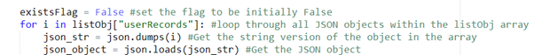

User Data Setter Script
Now, lets create the userDataSetter script. Go to the mysite folder where your flask_app.py file is stored and create a new file called “userDataSetter.py”.
In it, we first of all want to import the JSON file (not a particular function) – the whole JSON file. This is done using the “import JSON” command. Then, we want to define the path to out JSON file where we will keep the JSON objects, your path should be very similar to mine, accepts of the username:
Last, we want to create an array called “listObj” which will hold the parsed JSON objects. The reason why we are doing this, is because we have to first create the JSON object using python and then “dump” it into the JSON file.

Okay, we may now begin creating the actual function which will be the core of our script. Define a function called storeUserData() with the following parameters – email, forename, surname.
The function will take in the parsed data from the text box fields on the capture form page, the parameters in the function correspond the data from the fields and should be entered into the function in this order, I will show how to do that later when we will be connecting them together.
Now, we want to create the actual JSON object using the parsed data. But, before we do that, add the code to populate the listObj array. This is done to make sure that the JSON object we are adding does not overwrite the existing objects, but adds itself after the already existing objects. So, to do that, we use the “open()” function that takes in the parameter “path”, which is the path to out JSON file that we have defined at the top. It is generally a good idea to create variables for things like paths, numbers, words, etc so there no such things as “magic” numbers appearing throughout the file, this enhances readability and overall adaptability of the code, as if we would like to change the path of our JSON file, all we have to do is to change the path in one place, not at all functions we defined it at. So, using the following code, we open the JSON file as “fp” and then load all of the objects stored in that file into the listObj array.
Now, we want to define the JSON object that will be stored in the JSON file
The object user_data, will have attributes “email, “forename” and “surname” which will all hold the parsed data from the text fields into the function and then into here.
Now, we need to add the code to JSON file, but first of all, we want to add some basic error checking. So, first we want to create a flag, that will change state if the email address that we provide into the text field already exists in the JSON file. To do that, we create create a flag called “existsFlag” and make it equal to False. Then, using the for loop function built into Python, we want to loop through each JSON object in the listObj array. For each object, we first want to get the string version of the object in the array, and then get the string version of the object.

Then, if the email attribute within the created JSON object matches the email attribute within the object that the JSON file holds, then make the flag equal to true, the flag will not change state unless the matching email is found throughout the whole array.
If the existsFlag does not equal to true, then append the created JSON object into the listObj array, and then dump the array into the JSON file. If the operation was successful, then print “user added” into the console, if the existsFlag is true, then print out “user already exists” into the console.
To test the python script, we don’t need to hook it up to the flask_app.py just yet, we can just call the storeUserData() function and hardcode the email, forename and surname as parameters and then hit the “RUN” button at the top right hand side of the screen.
Okay, now check the userData.json file and look if the object was added.
If you have the same, congratulations, you have successfully created your first JSON object using python! Now, delete the storeUserData() line from the bottom of the python script and close the file down. As you can see, the text for some reason is not capitalised, why? Well, the capitalisation happens in the flask app, so we first need to hook this script up to the flask app in order for the validation to work properly.
To use the this python script in the flask app, we need to import the storeUserData() function using “from”. We have done this before so it should it be hard:

Then, we add the function at the bottom of the /captureForm route function add add the parameters.
Finally, restart the flask app, put some data into the capture form and pay close attention to the JSON file. Delete all of the previous objects from the JSON file, there might be duplicates.
Then if I redo the same process and type in the same data, the same object does not appear – success!
Congratulations, 75% of our app is done, time to get the other 2 python scripts working!
userDataSetter Code
import json #Imports the whole JSON file
path = "/home/klych/mysite/assets/userData/userData.json" #Defines the path the JSON file
listObj = [] #Object holder array
def storeUserData(email, forename, surname):
#Read JSON
with open(path) as fp: #open the JSON file as fp
listObj = json.load(fp) #load the fp JSON object data into the listObj array
#Define the JSON object to be stored into the JSON file
user_data = {"email" : email, "forename" : forename, "surname" : surname}
existsFlag = False #set the flag to be initially False
for i in listObj["userRecords"]: #loop through all JSON objects within the listObj array
json_str = json.dumps(i) #Get the string version of the object in the array
json_object = json.loads(json_str) #Get the JSON object
if(json_object["email"] == email):
existsFlag = True #Make the flag equal to true
if(existsFlag != True): #If the flag is false
listObj["userRecords"].append(user_data) #append the JSON object we created to the listObj array
#Do a dump to the JSON file
with open(path, "w") as file: #Open the JSON file with write as file
json.dump(listObj, file, indent = 4, separators = (',',': ')) #Dump the object into the file
file.close() #close the file
print("User added") #if successful, print that user is added into the console
else:
print("User already exists") #If unseccessful, type that he user already exists
storeUserData("hello@world", "HELLO", "WORLD")